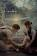
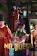

I love the chemistry between the characters and stroyline .
With many twists and plots throught the journey.
This drama tells of the love story that develops between a surgeon and a special forces officer.
The story is about When a modern day chef gets trapped in the body of a queen in the Joseon era women
The story is about an aspiring director, actor and screenwriter run a Seoul guesthouse that brings antics and romance into their lives.